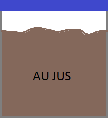
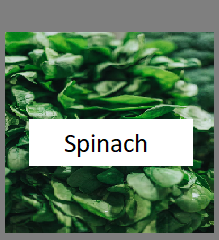

Strogonaff Sauce:
Ingredients: Beef Broth, Cream of Mushroom Soup, Dijon Mustartd.
Used in Strogonaff, On line in Easy-Pour containers.
Au Jus:
Ingredients: Butter, Flour, Beef Broth, Red Wine, Worcestershire.
Used on server heating station, served in a cup alongside French Dip
Pot Roast Veg + Jelly:
Ingredients: Jelly and Broth from Pot Roast, Roasted - Carrot, Celery, Onion and Garlic .
Combined with Pot Roast meat and demi-glaze on Sautee Sation
Spinach:
Used in Spinach Artichoke dip, and to dress Salmon Burgers
Romaine: Chopped
Used in Ceaser salad.
Mixed Greens:
Used in House Salad and to dress Burgers, Fried Chicken sandwhiches
Brussel Sprouts: Halved
Used as a side in Chicken, Steak, Fish dishes, and in Bacon Brussel appetizer.
Seasonal Vegetables: Chopped
Used as an optional side in Chicken, Steak, Fish dishes.
Brioche Buns:
Used for Burgers, Salmon Burgers, Fried Chicken sandwhiches, and Pull Pork sandwhiches